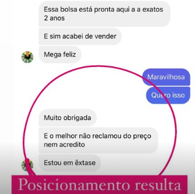

Olá, Nalu aqui.
Antes de me apresentar eu queria que você olhasse atentamente a imagem abaixo.
Essa foto é da minha aluna, que depois de aplicar o meu método de 3 passos conseguiu vender uma bolsa que estava em estoque há 2 anos.
Antes disso, ela batia cabeça com vídeos no youtube que só ensinavam pela metade e, por mais que se esforçasse, não conseguia vender.
Com o meu método, ela conseguiu vender rapidamente a sua peça, e já sabe o que precisa fazer para viver da costura criativa.
E nesse texto você vai entender porque você precisa ser uma artesã digital, e como esse método vai te ajudar, assim como ajudou essa e mais de 190 alunas.
Vamos lá?
ATENÇÃO: Se você deseja receber o link de inscrições na segunda-feira uma hora antes de todo mundo, e assim garantir todos os benefícios do método Artesã Digital, toque no link abaixo e se inscreva no grupo de super-interessados.
Se você está lendo esse texto, acredito que você ama artesanato assim como eu.
Trabalhar com o que nós amamos é ótimo, e eu inclusive falo que o artesanato é um momento que nós podemos ficar a sós, um momento terapêutico e de paz.
Mas, e se eu te falar que essa romantização do artesanato está destruindo a carreira de muitas artesãs?
Muitas não sabem vender, não sabem precificar e muito menos tem um objetivo definido para o seu ateliê.
“Para quem não sabe onde quer chegar, qualquer caminho serve”.
E o que eu mais vejo são artesãs que ainda encaram seu trabalho como um hobby. Podem até falar para si mesmas que são o seu trabalho, mas não seguem um método que permita construir uma carreira de sucesso.
Isso é complicado, porque nós crescemos ouvindo que artesanato é lembrancinha, ouvindo os clientes desvalorizando o nosso serviço.
E para piorar, na internet o que mais se vê são apenas vídeos ensinando a fazer moldes e mais moldes.
Não há uma formação para artesãs, e é compreensível que a maioria tenha dificuldade em viver da sua costura.
Por isso, a partir de agora eu quero te oferecer um caminho seguro.
Você pode seguir esse método que eu vou te propor e se tornar uma artesã digital; ou você pode continuar tentando crescer sozinha, com vídeos no youtube e informações soltas pela internet.
Quando eu comecei o processo para ser uma artesã digital, lá no início de 2013, e após abandonar a carreira de bióloga para viver do meu artesanato…
Eu tinha os mesmos problemas que você - eu era insegura, tinha medo de aparecer e ficava frustrada por vender pouco.
Foi um processo muito longo… e entre erros e acertos, finalmente em 2019 eu consegui encontrar meu espaço na costura criativa.
Em apenas 3 a 4 meses no início da pandemia eu consegui aproveitar a oportunidade do momento e fiz mais de 15 mil em vendas e meu instagram saiu de mil para 10 mil seguidores, tudo isso porque já estava posicionada e trabalhando meu perfil.
Eu não poderia ficar sem fazer nada. Meus estudos de marketing e de peças estavam dando resultados, e senti que era a hora de ajudar outras artesãs.
Aqui embaixo você pode olhar o depoimento de várias alunas que confiaram no meu método, e hoje são artesãs digitais.
Mulheres que perderam a timidez, que encontraram o seu posicionamento, tem mais autoestima e amor-próprio…
Mulheres empoderadas!
Nesses últimos anos a minha busca tem sido por encontrar a melhor forma de se viver do artesanato, a que me permita melhor qualidade de vida e bem-estar.
Encontrei essa resposta na internet, e batizei o meu método de Artesã Digital pois, agora, já não é mais necessário ter uma loja física ou participar de feiras de artesanato.
Basta um ateliê em casa, um celular, e muita vontade de dar certo.
E depois de muitos estudos e aprendendo com a minha própria experiência, eu desenvolvi o meu método de 3 passos.
Esse é o Método Artesã Digital, que pode ser condensado nesses 3 pilares:
Peças - onde você aprende a fazer peças estratégicas e lucrativas. São várias aulas para você desenvolver sua técnica e ficar segura na hora de produzir seu artesanato.
Com aulas práticas:
Vendas - no 2° passo, você irá aprender as melhores técnicas de vendas para artesãs. Se você tem dificuldade com precificação, com atendimento ao cliente, eu garanto que ela acabará.
Aulas como:
Instagram - No último passo, você desenvolve o seu posicionamento e atrai clientes de todo o Brasil, aprendendo a tirar as melhores fotos e a usar o botão ‘patrocinado’ para divulgação.
Onde você tem conteúdos sobre:
São 16 módulos que não param de aumentar. Na minha formação, todos os meses você recebe 3 aulas adicionais com novas peças e mais técnicas de vendas.
MÓDULO 0
Boas vindas e introdução
Aqui você recebe todas as orientações gerais do curso. Vou te encaminhar ao grupo exclusivo no Telegram, onde você pode tirar suas dúvidas e conversar com outras artesãs. Você também ganha acesso à comunidade exclusiva no Facebook, para compartilhar seus trabalhos, ajudar outras artesãs e ser ajudada.
MÓDULO 1
Bolsa Isabela
Execução da Bolsa Isabela em videoaula + PDF para baixar o molde e outro PDF com uma lista dos materiais utilizados.
MÓDULO 2
Bolsa Yara
Execução da bolsa Yara em videoaula + PDF para baixar o molde outro PDF com uma lista dos materiais utilizados.
MÓDULO 3
Mochila antifurto Nalu
Execução da mochila antifurto Nalu + PDF para baixar o molde outro PDF com uma lista dos materiais utilizados.
MÓDULO 4
Frasqueira luxo Bela Dani
Execução da frasqueira luxo Bela Dani + PDF para baixar o molde outro PDF com uma lista dos materiais utilizados.
MÓDULO 5
Pochete Ana Paula
Execução da pochete Ana Paula + PDF para baixar o molde outro PDF com uma lista dos materiais utilizados.
MÓDULO 6 - Bônus
Como eu fiz para crescer no instagram
Aqui eu mesma vou abrir a caixa preta do meu instagram - vou te ensinar o passo a passo de como eu fiz para ganhar mais de 10 mil seguidores em tempo recorde - e como eu fiz para alcançar mais de MEIO MILHÃO de pessoas através do REELS.
MÓDULO 7 - Bônus
Como eu fiz para crescer no instagram
Nessa aula com o especialista Rodrigo Roncolato você vai aprender o essencial sobre o CANVA para publicar suas fotos no instagram e construir um feed incrível para o seu perfil.
MÓDULO 8 - Bônus
Aula com especialista - Dominando o MEI
Nesse módulo você vai ter uma aula de tira-dúvidas com a especialista Mirian Figueiredo e vai aprender o passo a passo de como abrir o MEI.
MÓDULO 9 - Bônus
Aulas com especialista - Como criar uma máquina de gerar clientes
São 5 aulas com os temas: criando uma conta comercial; botão turbinar publicação; público alvo local; adicionando formas de pagamento; criando meu primeiro anúncio.
MÓDULO 10 - Bônus
Ferramenta de Precificação
Aqui eu disponibilizo uma planilha de precificação e te ensino como utilizá-la. Você também terá acesso a duas lives com mais de 1 hora e meia de duração, onde eu falo tudo que uma artesã precisa sobre precificação.
MÓDULO 11 - Bônus
Carteira Viviane, Necessaire Jéssica e Aula técnica
Execução da carteira Viviane e da necessaire Jéssica, com moldes e materiais utilizados disponíveis para download. Na aula técnica, eu disponibilizo para você um material PDF contendo o calendário inteligente da Artesã. Mostro para vocês datas importantes, sugestões de temas para FEED/STORIES e dicas de posicionamento.
MÓDULO 12 - 15
Execução de peças
Nos módulos 12 ao 15, você aprende a fazer essas peças: Bolsa celeste, Bolsa Térmica de Luxo, Necessaire Rocambole, Bolsa Transversal Alice, Esmalteria Nícia, Bolsa Roberta.
São diversas peças para você se especializar e se tornar uma artesã mais qualificada e diferenciada.
Eu realmente não quero que você dependa de outro curso de artesanato depois do Método Artesã Digital.
E por isso a entrega não para por aqui.
Para aumentar seus resultados e você ter certeza de que esse é o melhor caminho, eu tenho uma série de bônus exclusivos para quem entrar nessa terceira turma.
Mas atenção, para você garantir esse bônus você precisa entrar agora no grupo Super Interessadas para receber o link com 1 hora de antecedência.
Eu não poderia ficar sem fazer nada. Meus estudos de marketing e de peças estavam dando resultados, e senti que era a hora de ajudar outras artesãs.
E assim garantir que você será uma das primeiras a adquirir, ok?
Vamos aos bônus:
Mentoria exclusiva com a Nalu
As vinte primeiras alunas irão ganhar um acompanhamento em grupo junto comigo. Nesses encontros vamos tirar dúvidas quanto ao andamento do curso e discutir estratégias de marketing digital.
Ainda falaremos sobre fotografia, linha editorial e muito mais! É a sua oportunidade de conversar diretamente comigo, e receber conselhos de quem já está há mais de 9 anos posicionada no digital.
Você vai receber 3 réguas de patchwork diretamente na sua casa, que juntas totalizam um valor de R$69,00.
Curso Artesã de Valor e 100 reais em desconto
Você quer aprender a fazer bolsas do básico ao avançado? Adquirindo o método Artesã Digital você recebe, de graça, o curso Artesã de Valor.
Esse curso irá te ensinar a fazer bolsas do zero apenas utilizando a sua máquina doméstica. São 26 aulas que você estará levando totalmente de graça caso adquira nas primeiras 24 horas.
Aula 01 - Como estimular a sua criatividade na hora de fotografar seus produtos.
Um passo a passo para que você nunca fique sem ideias na hora de fotografar seus produtos.
Aula 02- Como escolher o produto certo para sua fotografia
Aprenda de um jeito simples e prático como escolher o melhor produto para fotografar.
Aula 03 - Como tornar sua foto de produto atraente
Método Artesã Digital (Valor: R$797,00)
Bônus 1: Acompanhamento em grupo (Valor: R$400)
Bônus 2: Artesã de Valor - do Zero a Bolsa Perfeita (Valor: R$147,00)
Bônus 3: Três réguas (Valor: R$69,00)
Mas você não vai pagar esse valor…
Tudo isso fica por apenas
R$697,00
Preço válido apenas para as primeiras 24 horas.
E você não corre risco nenhum. Você pode garantir o curso, ter acesso a todos os bônus e, se você achar que não é para você, você tem até 7 dias para pedir o seu dinheiro de volta.
Ou seja, você pode assistir várias aulas antes de decidir continuar ou não com a nossa formação. Eu irei devolver o seu dinheiro sem burocracia alguma.
Se você é daquelas que gosta de dormir até mais tarde, eu recomendo que você coloque um despertador no seu celular para acordar antes da abertura das inscrições.
As inscrições começam oficialmente às 7 horas, mas quem estiver no grupo recebe o link com 1 hora de antecedência, ou seja, 6 horas.
Nunca costurei. O método é pra mim?
Com certeza. Não é necessário experiência técnica para participar do curso. Mesmo que você esteja iniciando, você consegue aprender e se desenvolver com os conteúdos.
Já sou artesã, mas ainda não trabalho com costura criativa. O método também serve pra mim?
Sim. O curso é preparado para que qualquer um que entre nele consiga se desenvolver na costura criativa. Se você já trabalha com artesanato, fica até mais fácil.
É on-line ou presencial?
Totalmente online, com acesso ao conteúdo pela área de membros hospedada na plataforma da Hotmart.
Como vou receber acesso ao produto?
Assim que finalizar a compra, você receberá um e-mail da Hotmart com as instruções completas para acessar a área de membros do Método Artesã Digital
Fiquei com uma dúvida! Posso entrar em contato com você?
Sim! Eu e minha equipe estamos dispostos para te ajudar. Toque no link e envie sua dúvida.
Te espero dentro do grupo de Super Interessados.
Beijos,
Nalu.